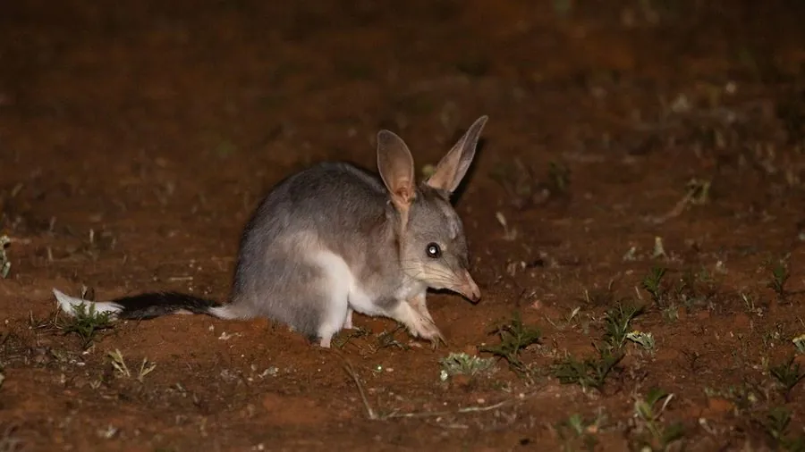

哺乳动物 · 动物界
兔耳袋狸 Macrotis lagotis

澳大利亚干旱内陆的有袋类，耳长如兔、吻部细长，后肢强壮善跳，挖掘螺旋形深洞躲避酷热，因外来捕食者而数量锐减。
- 分类
- 门脊索动物门纲哺乳纲目袋狸目科袋狸科属兔耳袋狸属
- 栖息环境
- 干旱沙地、荒漠草原、稀树灌丛与砂岩丘陵
- 地理分布
- 澳大利亚中部与西部干旱内陆，塔斯马尼亚与南澳部分地区有重引入种群
- 保护级别
- IUCN 易危（VU）；澳大利亚列为易危物种
物种志
兔耳袋狸体形似兔，成年体长 29–55 厘米，尾长 20–29 厘米，体重 0.8–2.5 千克，雄性明显大于雌性。最醒目的是一对又长又尖的耳朵，可达 9 厘米，能灵活转动散热并捕捉昆虫爬动的声音；吻部细长呈粉红色，尾端有黑色毛簇。毛色灰蓝至沙灰，前肢爪发达，后肢强壮，奔跑时像袋鼠一样以跳跃为主。
它们栖息于澳大利亚中部的干旱沙地、荒漠草原与灌丛，是罕有的能在极端干旱环境中生活的有袋类。夜间外出觅食，用长吻在沙土中嗅探昆虫、幼虫、种子和块茎，一夜可挖掘数十个浅坑；白天则躲进深达 1–2 米、呈螺旋状下行的洞穴，洞内温度比地表低十余摄氏度。雌兽育儿袋向后开口，通常每胎 1–2 仔。自欧洲殖民以来，狐狸与野猫的捕食加上兔类竞争，使其分布区缩减到原来的两成左右，现依赖保护区与围栏工程维系。
形态与习性
- 体长约 29–55 cm，尾长 20–29 cm
- 体重约 0.8–2.5 kg，雄性明显较大
- 耳长约 7–9 cm，可转动散热并探测地下声响
- 食性昆虫、幼虫、蜘蛛、种子、块茎与真菌
- 洞穴深 1–2 m，呈螺旋形下行，白天可降温十余摄氏度
- 繁殖每胎 1–2 仔，幼仔在育儿袋中约 75 天
- 种群现状分布区较殖民前缩减约八成，野生个体估计不足 1 万只
趣味知识
- 兔耳袋狸的洞是螺旋形向下钻的，越往深处越凉快。
- 它一夜能在沙地上挖出几十个浅坑寻找昆虫幼虫，天亮后沙面像被翻过一遍。
- 它的耳朵能独立转动，既用来听地下的虫声，也用来散热。